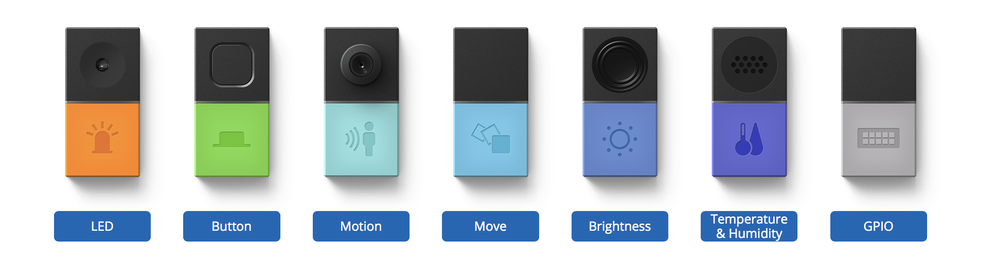
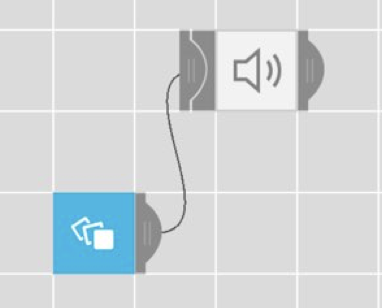
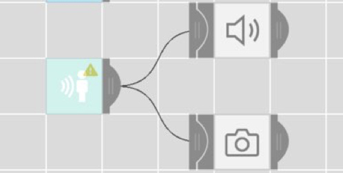

<!DOCTYPE html>
<html lang="ja" dir="ltr">
  <head>
      <style type="text/css" >
      #wrapper {
          width:850px;
          margin :250 auto ;
          border:1px solid #ff6481;
  }
      body{
        font-family: sans-serif;
      }
      body{
      font-size : 14px;
      }
          </style>
    <meta charset="utf-8">
    <link rel="stylesheet" href="./assets/css/main.css">

    <title>Mesh</title>
  </head>
  <body>
    <div style="margin-left:300px;margin-right:150px;">
      <h1><font size="38pt">Mesh</font></h1>
      <br>
        <h1><font size="5pt">「Mesh紹介」</font></h1>
      <br>
      <div class="">
                
              </div>
スマホのアップリと連結して使用できるIOTキット。
たどえば、光を感じたら音を流すとか、いろんな使い方ができる。
<br>
<iframe width="662" height="372" src="https://www.youtube.com/embed/Bbk86wGizqw" frameborder="0" allow="autoplay; encrypted-media" allowfullscreen></iframe>
<br>
<h1><font size="5pt">「Meshを利用してみよう」</font></h1>
<br>
私たちは、旅行チームだったために,旅行中Meshを使用する方法を考えてみました。 <br>
旅行中困る時の中でも、一番困る"財布盗難"から自分の財布を守ることにmeshを活用する方法を考えました。
<br>
<div id="wrapper">
<p><font size="3pt"><strong>1.向きが変わったら音を鳴らすようにする</strong></font></p>

どろぼがポケットの中の財布を出すとき、財布の向きが変わると思って　<br>
MESH　Moveを利用し、向きが変わったらスマホで音を鳴らすようにしてみました。
<br>
<div class="">
          
        </div>
<br>
<iframe width="662" height="372" src="https://www.youtube.com/embed/q_UefCVBtr0" frameborder="0" allow="autoplay; encrypted-media" allowfullscreen></iframe>
<br>
でも、この方式では２つの問題点がありました。<br>
１。自分が財布を取った時にも音が出る可能性がある。<br>
２。盗まれら時に音が出ない可能性がある。<br>
なので、他の方法を考えてみました。<br>
<br>
<p><font size="3pt"><strong>2.盗もうとしたら音を鳴らして、写真もとるようにする</strong></font></p>

スマホを犯人の顔の写真を撮れる角度に置いて、どろぼが近ずいたら、それを院式して写真撮影・音を鳴らす。<br>
MESHのmotionを利用しました。<br>
<div class="">
          
        </div>
<br>
<iframe width="662" height="372" src="https://www.youtube.com/embed/nH3pwiDrIH0" frameborder="0" allow="autoplay; encrypted-media" allowfullscreen></iframe>
<br>
でも、この方式も問題点があったです。<br>
１。財布の隣に携帯がないと写真を撮れない<br>
２。財布をポケットに入れることができない。
<br>
</div>
<br>
現実における活用法にとらわらず、より自由に活用法を探求したら、もっと良かったかなと思います。
  </body>
</html>
